מקורות קרינה · שפופרות מיקרוגל · סימולציה ב‑COMSOL
מקורות קרינת מיקרוגל: קליסטרון ושפופרת גל נע (TWT)
בקליסטרון ובשפופרת גל נע, אלומת אלקטרונים בוואקום מוסרת חלק מהאנרגיה הקינטית שלה לגל אלקטרומגנטי ומגבירה אותו. שפופרות כאלה משמשות במשדרי מכ״ם, בלוחמה אלקטרונית ובתקשורת לוויינית. בדף מוצגים מודלים שבניתי ב‑COMSOL Multiphysics לשני ההתקנים: קליסטרון בתדר 9.4 GHz בתחום X-band, מתותח האלקטרונים ועד הגל שיוצא לגלבו, שפופרת גל נע סלילית לתחום 6 עד 18 GHz ומבנה גל איטי מגלבו מקופל ב־Ka-band.
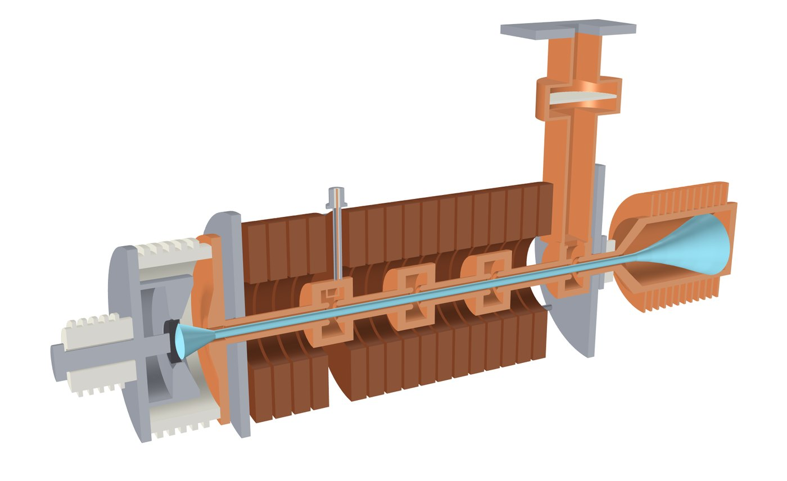
קליסטרון: אפנון מהירות וקיבוץ
אלומה רציפה עוברת במרווח של חלל תהודה. המתח המתחלף על המרווח מאיץ חלק מהאלקטרונים ומאט אחרים, ובמרחב הסחיפה המהירים משיגים את האיטיים: האלומה מתקבצת לחבילות שחוזרות בתדר האות. חלל המוצא נמצא במרחק שבו ההרמוניה הראשונה של הזרם מרבית, וזרם החבילות מעורר בו שדה שיוצא לגלבו.
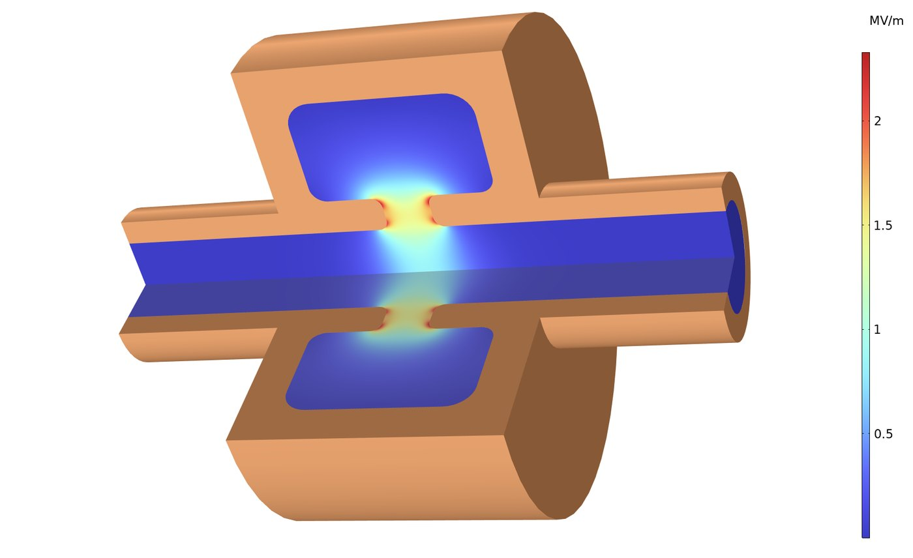
חלל התהודה נפתר במודל דו־ממדי צירי־סימטרי, וסקריפט הכוונון מעדכן את רדיוס החלל עד שהאופן היסודי נמצא ב־9.4 GHz. הפסדי הדופן מחושבים מתנאי שפה עכבתי (impedance boundary condition) של נחושת.
- Q0 של 4,080 עם דפנות נחושת
- R/Q של 77 Ω (מוסכמת המעגל, V²/(2ωU))
השדה של האופן, כפי שחושב במודל החלל, משמש ישירות כשדה המאפנן במעקב החלקיקים. המודל מזניח את המטען המרחבי, ולכן אפשר להשוות את הצימוד בין השדה לחלקיקים לתאוריה הבליסטית: המרחק לקיבוץ המרבי, כ־93 מ״מ מהמרווח בממוצע על האלומה, שונה מהתאוריה בפחות מ־0.3%, ושיא ההרמוניה הראשונה של הזרם גדול פי 1.17 מזרם האלומה הישר, לעומת פי 1.16 בתאוריה.
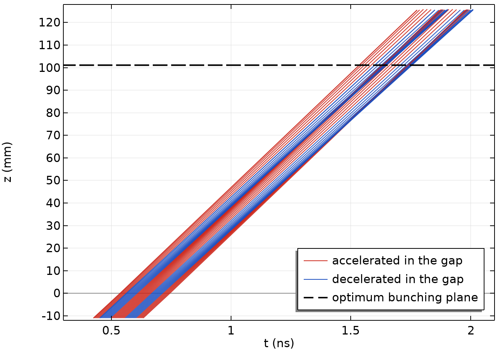
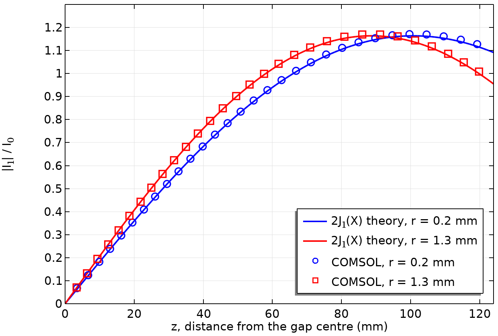
חלל המוצא והגלבו
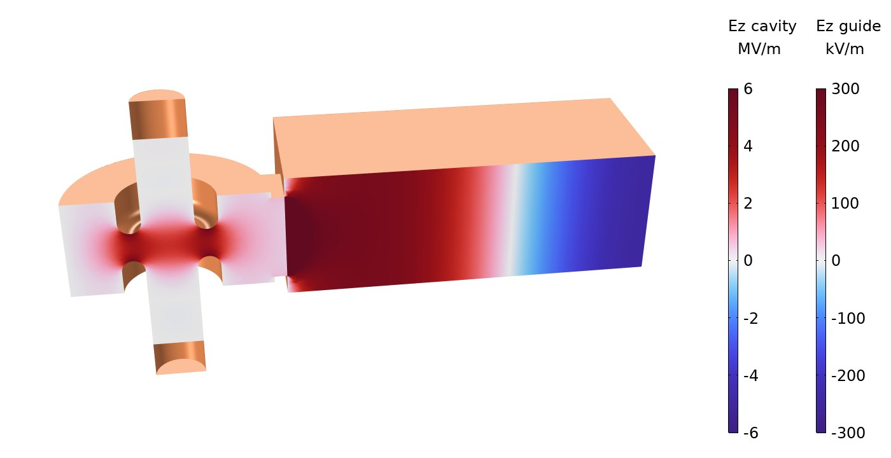
חלל המוצא מחובר דרך צמצם לגלבו WR-90. פתרון התדרים העצמיים של החלל יחד עם הגלבו נותן תדר מרוכב, שממנו מחושבים גורם האיכות המועמס וה־Q החיצוני. ה־Q החיצוני קובע באיזה קצב האנרגיה שהחבילות מוסרות לחלל יוצאת לגלבו.
- גורם איכות מועמס של 368, מהתדר העצמי המרוכב
- Q חיצוני של כ־400, לעומת Q0 של חלל המוצא, כ־4,060 (הפסדי דופן): כ־90% מההספק שהחבילות מוסרות לחלל יוצא לגלבו
תותח האלקטרונים
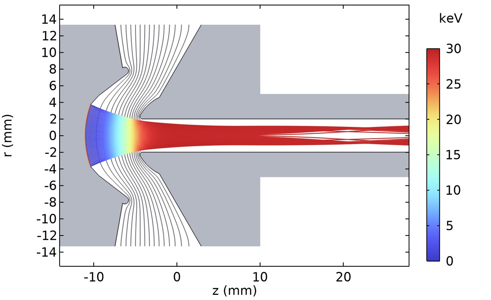
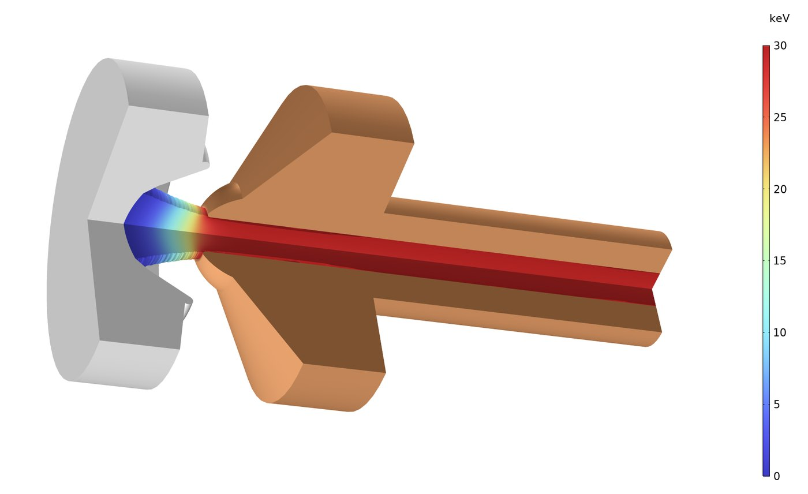
קתודה כדורית קעורה פולטת זרם המוגבל על ידי המטען המרחבי (חוק צ׳יילד), ואלקטרודת המיקוד והאנודה מעצבות את השדה כך שהאלומה מתכנסת לתוך צינור ברדיוס 2 מ״מ. השדה והמסלולים מחושבים בלולאה, עד שהזרם הנפלט מתייצב. התותח פולט 4.16 A ב־30 kV (פרוויאנס של 0.80 µP) בצפיפות זרם ממוצעת של כ־9 A/cm² על הקתודה, והאלומה מגיעה למותן ברדיוס 1.1 מ״מ, כ־12 מ״מ אחרי שפת האנודה. בלי שדה מגנטי האלומה פוגעת בדופן הצינור כ־20 מ״מ אחרי המותן, ולכן בקליסטרון מקיף אותה סולנואיד מיקוד.
שפופרת גל נע: מבנה גל איטי סלילי
בשפופרת גל נע האלומה והגל מתקדמים יחד, והאלקטרונים מוסרים לגל אנרגיה כל עוד מהירותם מעט גבוהה ממהירות הפאזה שלו. הסליל מאט את הגל: האות מתקדם לאורך הסרט המתכתי כמעט במהירות האור, ולאורך הציר הוא מתקדם לאט פי שמונה בערך. מהירות הפאזה משתנה מעט עם התדר, ולכן מגבר סלילי מכסה תחום רחב, למשל 6 עד 18 GHz.
במודל התלת־ממדי אורך הגל לאורך הציר ב־12 GHz הוא 3.03 מ״מ, לעומת 25 מ״מ במרחב החופשי. מהירות הפאזה, 0.121 ממהירות האור, מתאימה לאלומה של כ־3.8 kV.
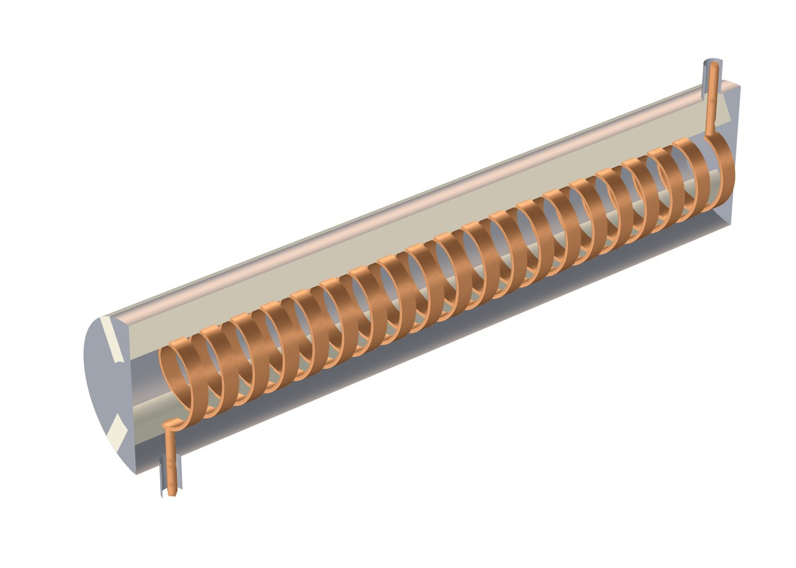
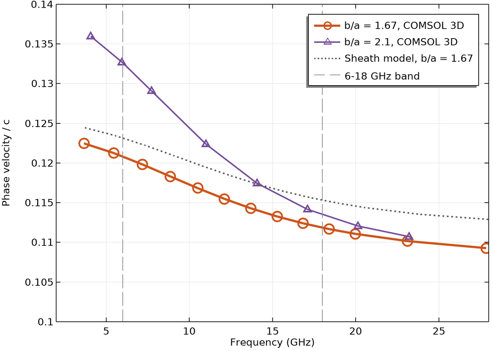
תא יחידה אחד של הסליל, עם תנאי שפה מחזוריים (Floquet), מספיק לחישוב עקומת הנפיצה ועכבת האינטראקציה (interaction impedance) בכל התחום. תא היחידה שנבחר לתחום הוא סליל קטן יותר (רדיוס 0.6 מ״מ, לעומת 0.8 מ״מ במודל התלת־ממדי) בצינור קרוב יותר. בתא הזה מהירות הפאזה יורדת מ־0.121 ל־0.112 ממהירות האור בין 6 ל־18 GHz (±3.8%), ואלומה של 3.45 kV סינכרונית לגל ב־12 GHz. צינור מתכתי קרוב לסליל משטח את עקומת הנפיצה: בצינור רחב יותר השינוי גדל ל־±7.8%.
גלבו מקופל ב־Ka-band
בתדרים גבוהים יותר הסליל קטן מאוד ומוגבל בהספק, ומבנה הגל האיטי נבנה מגלבו מלבני שמתפתל הלוך ושוב לרוחב צינור האלומה. הגל עובר במסלול המפותל והאלומה חוצה אותו בכל קיפול, פעמיים בכל מחזור, ולכן לאורך הציר הגל מתקדם לאט יותר מהאור. המבנה כולו מתכת, והחום מתפזר דרכו טוב יותר מאשר בסליל הנתמך על מוטות קרמיים. המודל הוא תא יחידה עם תנאי שפה מחזוריים, שנפתר בתדרים שסביב 35 GHz.
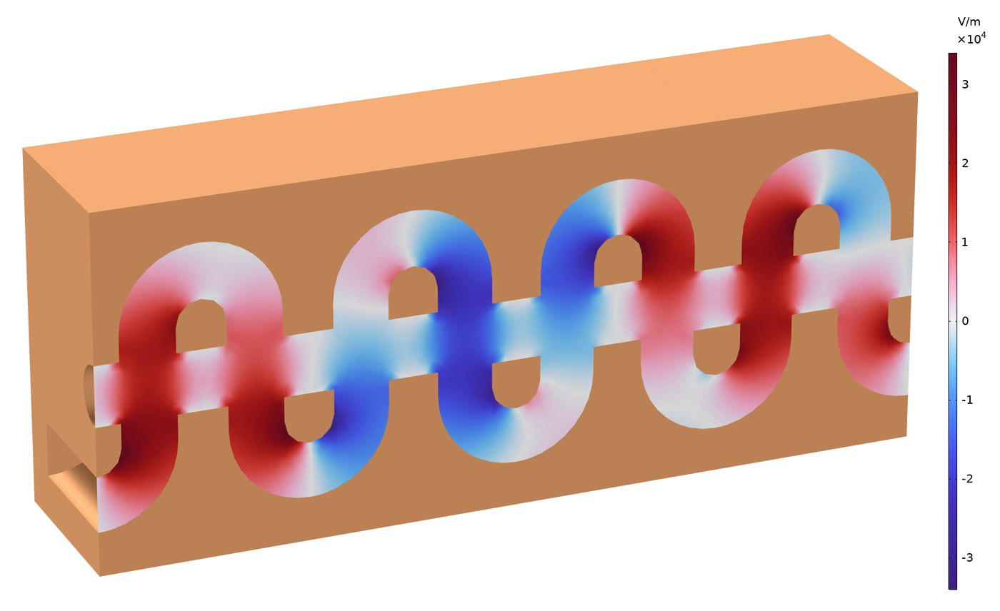
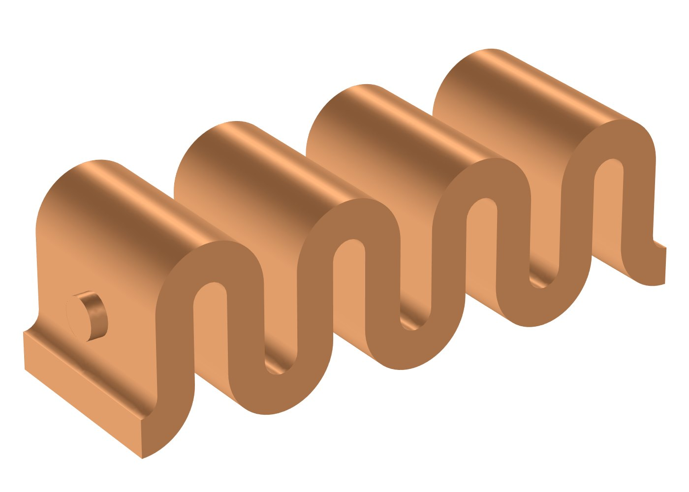
מה המודלים מדגימים
- תדרים עצמיים של חללי תהודה עם הפסדי דופן
- שדה RF מחושב כקלט למעקב חלקיקים יחסותי
- פליטה המוגבלת על ידי המטען המרחבי ואופטיקת אלומה בתותח Pierce
- תנאי שפה מחזוריים לעקומות נפיצה ועכבת אינטראקציה
- צימוד לגלבו ולקו קואקסיאלי ופרמטרי פיזור
- גאומטריה תלת־ממדית מלאה ואנימציות מתוך COMSOL
עבודת הדוקטורט שלי עסקה ביצירת קרינת טרה־הרץ בהתקני אלקטרונים חופשיים. מחקר על קרינת אונדולטור מחבילות אלקטרונים ועל האצה באונדולטור סלילי מוצג בדף המאיצים, ודוגמאות COMSOL נוספות בדף הסימולציות.
לשאלות טכניות ולשיתופי פעולה מחקריים: nezahb@ariel.ac.il